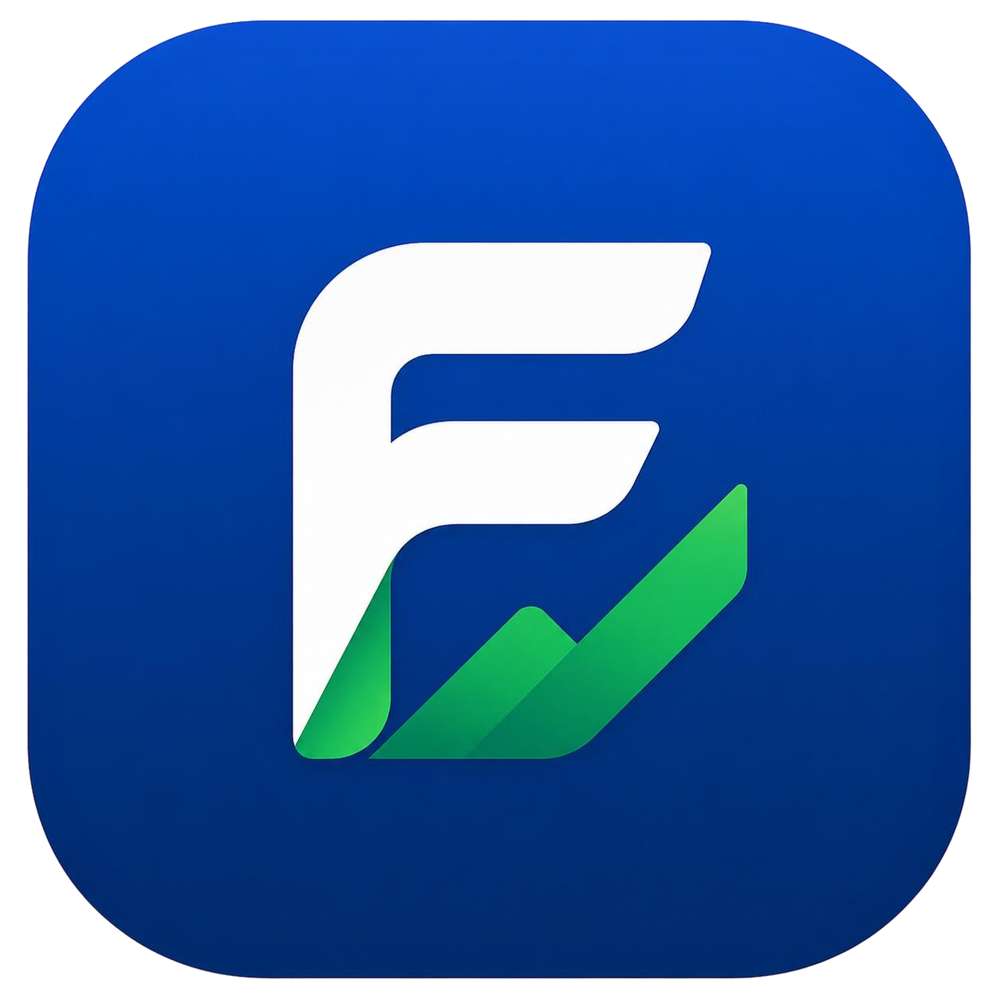

Captura e importação
Registre comprovantes pela câmera ou importe arquivos diretamente de outros aplicativos.

FinTrackO FinTrack é um aplicativo Android para registrar, organizar e recuperar comprovantes de transações financeiras com OCR, busca semântica e backup criptografado opcional no Google Drive.
Capture, importe, confirme e encontre comprovantes sem depender de cadastro, servidor próprio ou conexão constante com a internet.
Registre comprovantes pela câmera ou importe arquivos diretamente de outros aplicativos.
Extraia valor, data, estabelecimento e outras informações com OCR no dispositivo.
Encontre documentos por termos exatos ou pelo significado da busca.
Visualize gastos por categoria e período a partir dos dados estruturados.
Salve uma cópia criptografada no Google Drive apenas quando desejar.
Projeto acadêmico com foco em transparência, auditabilidade e privacidade.
O FinTrack foi projetado para operar localmente. Imagens, textos extraídos, categorias e embeddings são armazenados no dispositivo.
Área para disponibilização dos pacotes de instalação, notas de versão e links de download.